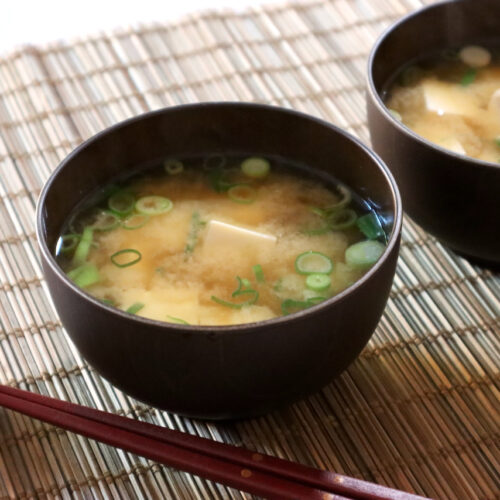

Miso Soup

Description
A famous cuisine from Japan that is especially easy to make,
since it's only ingredients are miso, tofu, and water.
Ingredients
- 2 green onions sliced
- 1 sheet of nori cut into pieces
- 4 cups water
- 4 tbsp miso paste
Steps
- Heat up water in pot.
- Add tofu. Once cooked enough, add miso
paste through strainer
- Add nori and green onions. Remove from heat.